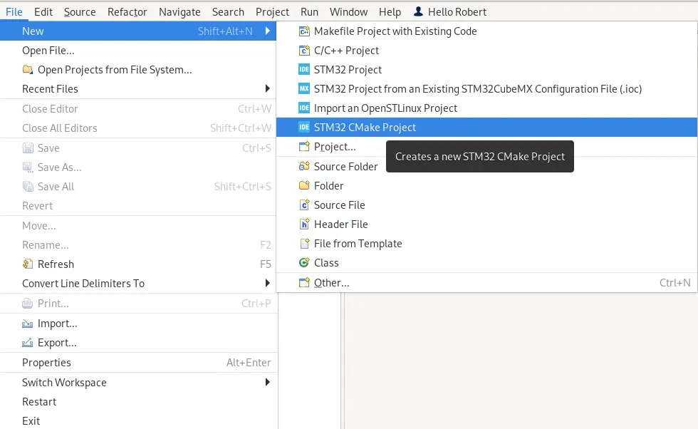
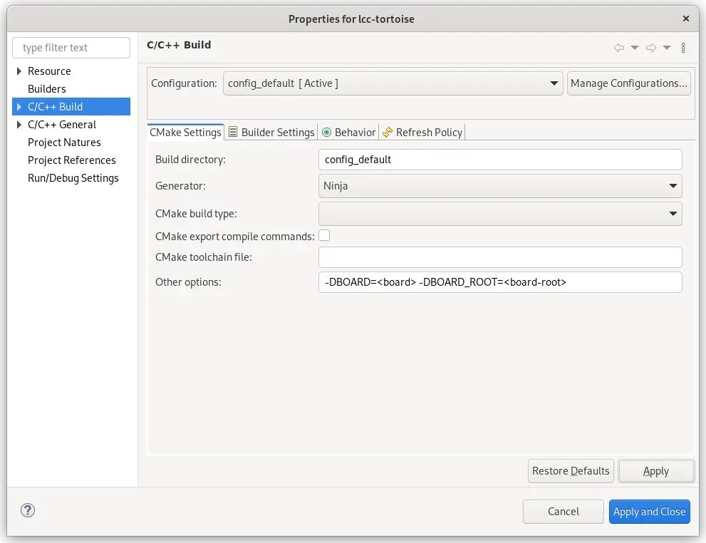
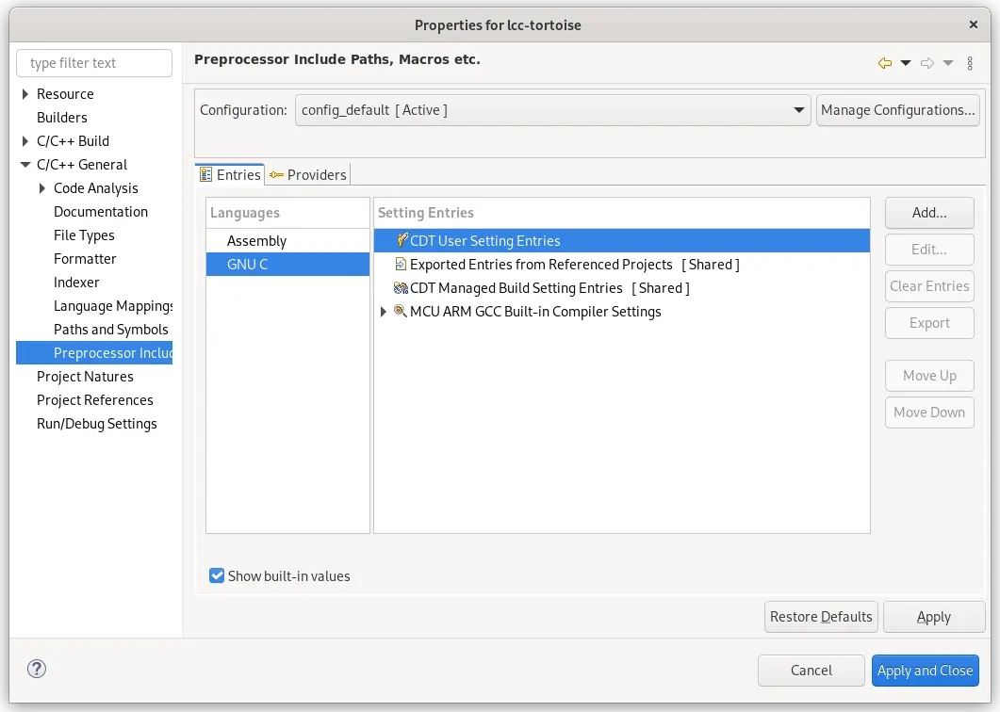
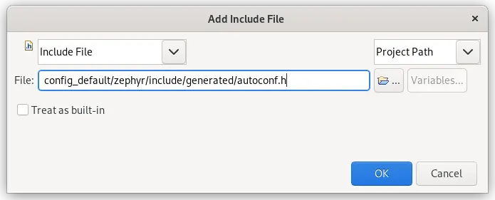
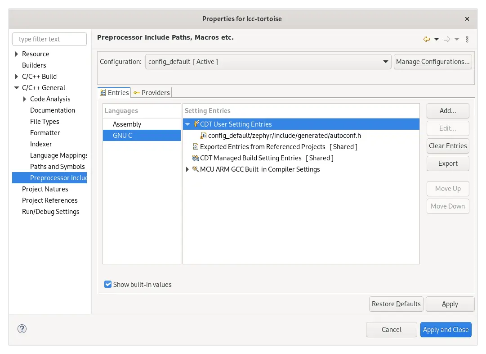
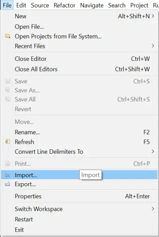
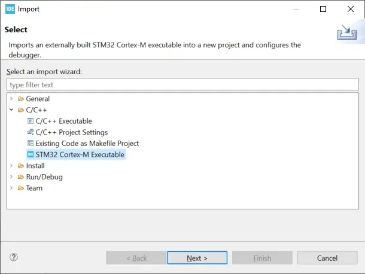

STM32CubeIDE
STM32CubeIDE is an Eclipse-based integrated development environment from STMicroelectronics designed for the STM32 series of MCUs and MPUs.
This guide describes the process of setting up, building, and debugging Zephyr applications using the IDE.
A project must have already been created with Zephyr and west.
These directions have been validated to work with version 1.16.0 of the IDE on Linux.
Project Setup
Before you start, make sure you have a working Zephyr development environment, as per the instructions in the Getting Started Guide.
Run STM32CubeIDE from your Zephyr environment. Example:
$ /opt/st/stm32cubeide_1.16.0/stm32cubeide
Open your already existing project by going to :

Select Project with existing CMake sources, then click Next.
Select and browse to the location of your sources. The folder that is opened should have the
CMakeLists.txtandprj.conffiles.Select and select the appropriate MCU. Press Finish and your project should now be available. However, more actions must still be done in order to configure it properly.
Right-click on the newly created project in the workspace, and select Properties.
Go to the C/C++ Build page and set the Generator to
Ninja. In Other Options, specify the targetBOARDin CMake argument format. If an out-of-tree board is targeted, theBOARD_ROOToption must also be set. The resulting settings page should look similar to this:
These options may or may not be needed depending on if you have an out-of-tree project or not.
Go to the page. Select the GNU C language, and click on the option.

Click Add to add an Include File that points to Zephyr’s
autoconf.h, which is located in<build dir>/zephyr/include/generated/autoconf.h. This will ensure that STM32CubeIDE picks up Zephyr configuration options. The following dialog will be shown. Fill it in as follows:
Once the include file has been added, your properties page should look similar to the following:

Click Apply and Close
You may now build the project using the Build button on the toolbar. The project can be run using the Run button, as well as debugged using the Debug button.
Debugging only
If you only want to use STM32CubeIDE to debug your project you can proceed as follows:
First, make sure to compile your project and have the
zephyr.elfavailable.Run STM32CubeIDE and import your project by going to :

Select , then click Next:

Click on Browse to browse to your build folder and select your
zephyr.elf.Click on Select to select your MCU. If relevant, choose also your CPU and/or core.
Click on Finish.
The project can now be debugged using the Debug button.
Troubleshooting
When configuring your project you see an error that looks similar to:
Error message: Traceback (most recent call last):
File "/path/to/zephyr/scripts/list_boards.py", line 11, in <module>
import pykwalify.core
ModuleNotFoundError: No module named 'pykwalify'
This means that you did not start the IDE in a Zephyr environment. You must
delete the config_default build directory and start STM32CubeIDE again,
making sure that you can run west in the shell that you start STM32CubeIDE
from.